Conjugated Valve Gear
Updated: 1/12/2026 (US Format)
Updated: 1/12/2026 (US Format)
The purpose of conjugated valve gear, initially invented by David Joy , later reinvented and refined by Harold Holcroft & Sir Nigel Gresley, is to synthesize the positions of at least 1 dependent valve using the positions of two other independent valves in a steam engine with at least 3 cylinders. It is a dependent valve gear rather than an independent gear because it extends the motion created by gears that derive their motion from the engine. It is an extrapolation of using an inverting rocking bar (rocking link) to synthesize the valve motion for a second cylinder at a 180° crank angle. In its most basic form the apparatus is a rocking bar nested inside another rocking bar. It can be configured in a variety of ways to accommodate many different crank angle configurations, valve travel offsets, and cylinder numbers.
In the long run, conjugated gear in all of the forms it has existed thus far is not as good as the best possible independent inside set. It hasn't been proven to be much more than a cute novelty. See concluding statements for details as to why.
Since conjugated gear is used on locomotives with both inside and outside cylinders, many engineers chose to set the inside cylinders at an angle, out of line with the outside cylinders, to attach the connecting rods of the inside cylinders to a crank axle after the first without fowling. To maintain the smoothest possible flow of torque, cylinder and crankpin offsets must be made according to Holcroft's Formula. Thankfully crank angle changes that conform to Holcroft's formula don't have to be accounted for when deriving a conjugated set. You can pretend as though the cylinders are still inline and the engine will work fine regardless.
Just like all subsequent configurations it can be derived using Holcroft's Polar Mapping Model. It uses two 1 to 2 levers and an equal lever. David Joy's variant was probably very similar to this. Holcroft invented it independently of Joy during his tenure at a GWR drafting office. Unlike future variations it was designed to be symetrical to conform to swindon practice. He built a model and demonstrated its operation to George Jackson Churchward. Due to a research trip Holcroft took to America, and his disappointment at learning he was not the first to invent the gear, he left some opportunities for others to create slightly different patent-able variations.
Holcroft's writings in his paper The Modern 3 Cylinder Locomotive imply this device was incorporated into some German 4-6-0 locomotive designs.
Patent Application Schematic |
Polar Model |
|---|---|
| 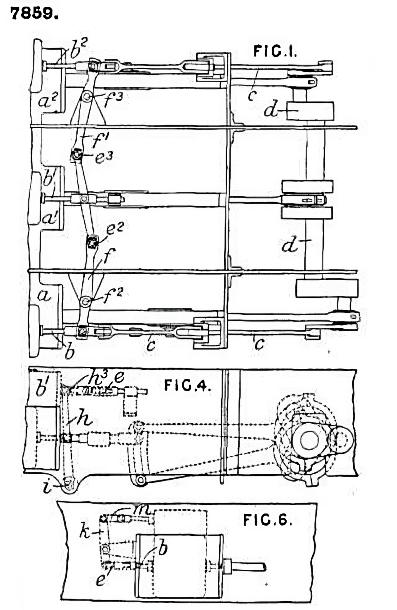 | 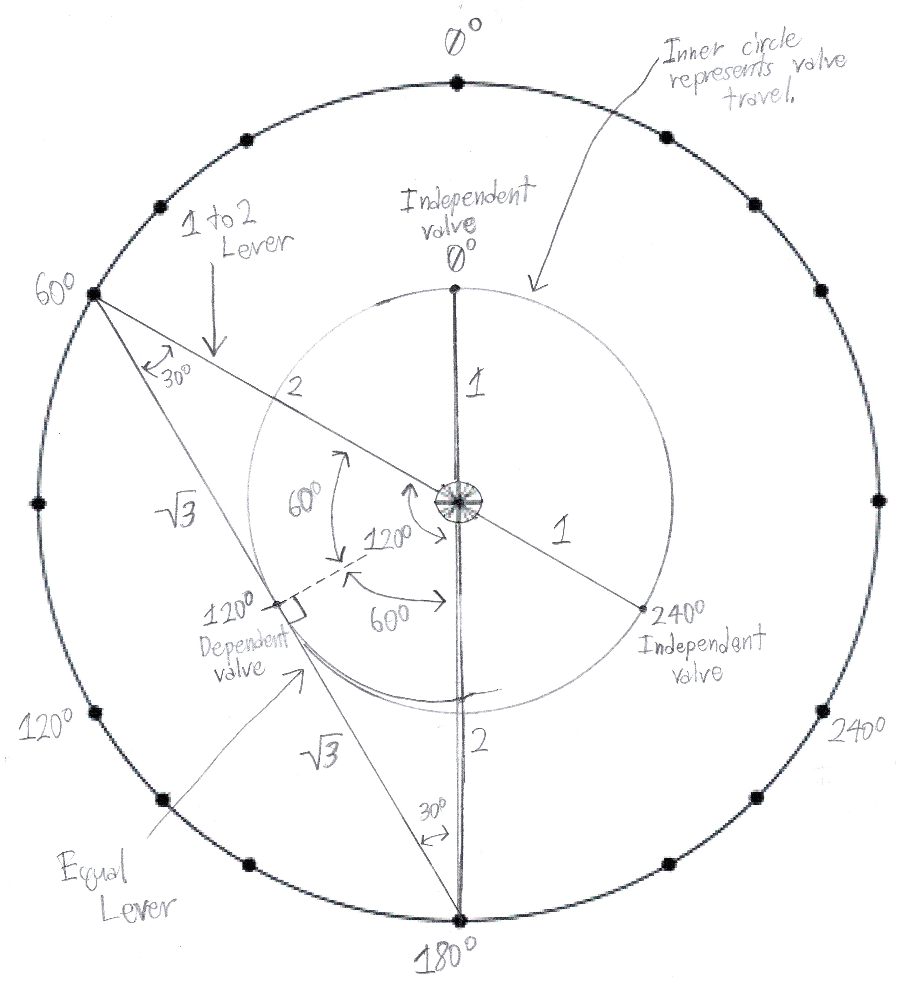 |
In 1917, Holcroft made a diagram and model of a 4-4-0 design with the symmetrical arrangment and presented it to Richard Maunsell. The model was donated to the Didcot Railway Centre and can be seen on display.

Sir Nigel Gresley invented the 2 to 1 rocker arrangement. This is the patent by which ownership of his invention was claimed.
This is the very first conjugated arrangement Gresley tested. It was equipped on GNR O2 No. 461. The axis of rotation is transverse instead of vertical. This necessitated shafts be used to transfer the motion between the transverse rocking levers seeing as their ends could no longer be directly connected. The position of the center valve also had to be moved out of line with the outside valves to make vertical room for the rocking bars to translate the motion. Gresley eventually judged it to have too many moving parts and moved on to integrating his 2 to 1 gear into his designs. Henschel und Sohn would create a 2 to 1 lever rocker shaft gear later on (Seen Below).

In late 1918 Holcroft read an article in The Engineer discussing GNR 461 and the criticisms levied against it. In response he wrote an open letter detailing the design elements necessary to improve the design by incorporating Gresley's 2 to 1 rocker arrangement. Those being his Cylinder and Crank pin offset formula and a twist to the middle valve ports to ensure all of the valves were inline. Shortly after he was invited to write and read a paper to the Society of Locomotive Engineers on three cylinder locomotives and conjugated gear. This brought him to the attention of Gresley who duely received Holcroft's solutions to his design problems and began building locomotives to the new specifications.
This is the most commonly known conjugated configuration, in which the rocking bars are machined and positioned in such a way that S3 = sinΘ, S2 sin(Θ+-120°), and S1 = sin(Θ-+120°).
The gear is composed of a 2 to 1 lever, equal lever, and three valve spindle links. The 2 to 1 lever divides in half and inverts the motion of S3 from the large end such that the resultant motion of the small end is -1/2sinΘ. The equal lever would just transform sinΘ into -sinΘ if attached to a stationary fulcrum, but when its center pin is connected to the small end of the 2 to 1 lever it translates the phase of S1 120° instead of 180°. The purpose of the spindle links are to allow tolerance for the added transverse motion of the equal lever and 2 to 1 lever pin arcs. The axes of motion are vertical allowing the apparatus to be compact and all of the valves to be in the same horizontal plane. Below is a reference I created for fitting different 2 to 1 and equal lever lengths with examples for three different center valve positions. I have also included a polar deriving reference.
Fitting Reference |
Polar Model |
|---|---|
|
When learning how this valve gear works what matters most to pay attention to is the ratios of rocking bar opposite end sizes, not the raw measurements. Raw measurements come into play when fitting the gear to real valves, but the ratios never change for a given crank and valve travel configuration. Notice the ratios of the equal lever ends are 1:1 and the ratios of the 2 to 1 lever ends are 2:1 in all of these examples despite the varying lengths. |
All you need to precisely derive a conjugated set is a unit circle and trigonometry skills. This specific example assumes that all of the valves have the same travel distance, which was often not the case in practice. The model can be modified to derive gear for motion translation across differing valve travels but requires several more calculation steps. |
| 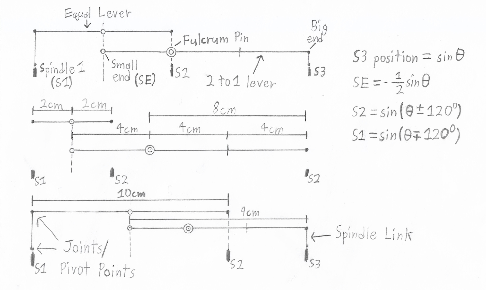 | 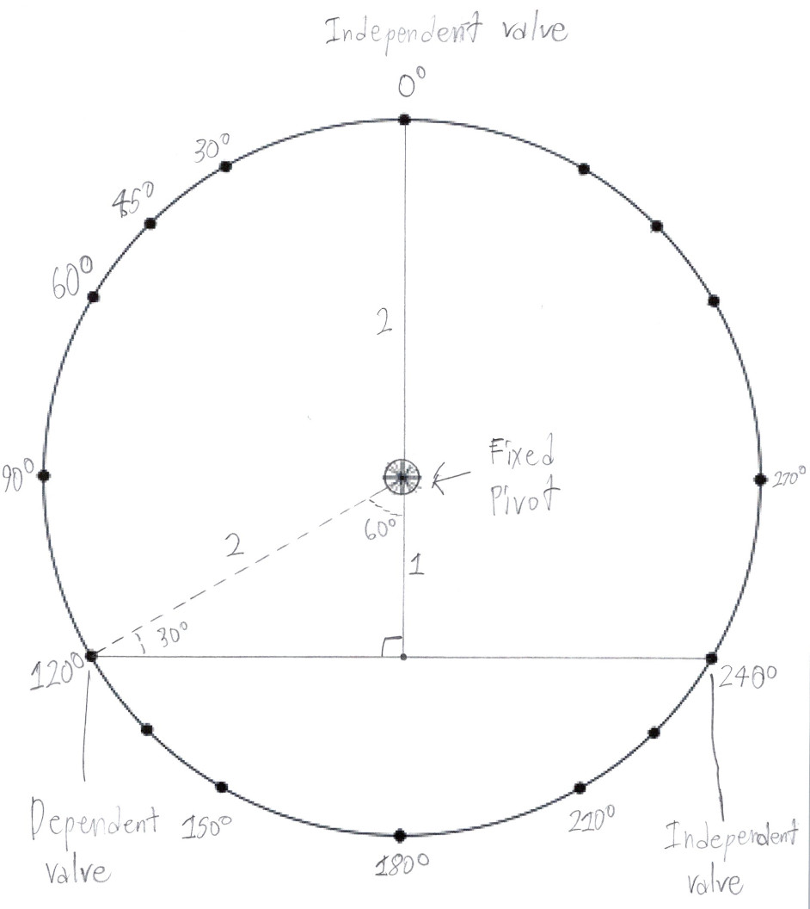 |
Here you can see the spindle links smoothing out the motion transferred to and from the valves and the 2 to 1 rocking bar set.
Due to the fact that the motion derived from neither the pistons nor the eccentrics is perfectly sinusoidal, the actual motion of the valves and the power flow will not perfectly match the simple equations here. In addition the transverse motion added by the arcs of the rocking bars complicates the motion further. For the sake of elucidating the basic function of conjugated gear, these equations are adequate abstractions.

Gresley experimented with placing the conjugated levers directly behind the cylinders on the D49 and B17 classes. The levers can only be installed in such a position if the middle cylinder isn't offset upward, otherwise the middle connecting rod would foul on the levers, so both locomotives had horizontal middle cylinders.
B17 GAD |
|---|

|
Finally Harold Holcroft had an opportunity to implement conjugated valve gear into a locomotive. Gresley held a meeting with Richard Maunsell and pursuaded him to experiment with 3 cylinder locomotives.
Holcroft's second configuration is really just the gresley configuration but connected to the valve spindles in a slightly different manner. The first loco designs that Holcroft incorporated his gear in had the apparatus situated behind the cylinders. Post Gresley the apparatus was placed in front of the cylinders while the outside ends of the gear remain attached to the back ends of the valve spindles via links which wrap around the cylinders. Holcroft chose this configuration to avoid the problem of the center valve timing skewing as the spindle links expanded due to heat.

The rights to manufacture the gresley configuration in North America were sold to ALCO. When adapting the gear for American conditions they increased the strength of the levers and the fulcrum pin so they could cope with the increased stresses involved with the much more powerful American designs. In addition, tail rods were added to the spindle links to increase their stability, decrease side thrusts on the valve rings and liners, and increase the support surface area to decrease wear on all components. These strength increasing practices were carried over to the Japanese variant of the conjugated mechanism
GAD for gear installed on UP 9000 |
Part GAD for Gear installed on UP 9000 |
|---|---|
| 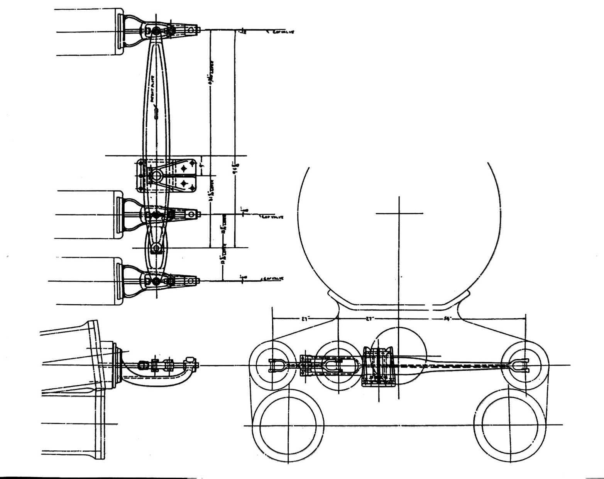 | 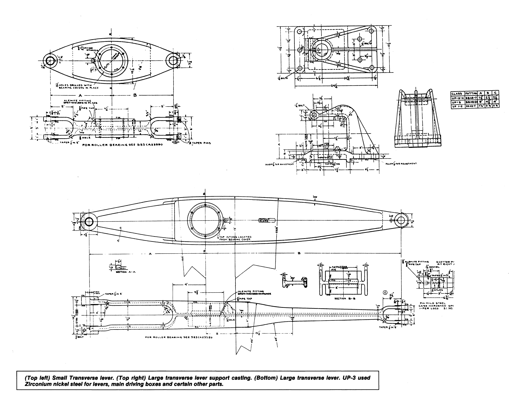 |

|

|
|---|
I don't actually know how this arrangment was concieved. I was surprized to learn it even existed as I had no written record of it before seeing photos. So written below is my educated guess as to how it came about.
In North America the American Locomotive Company purchased the rights to produce and sell locomotives installed with gresley's conjugated gear. Baldwin was thus unable to sell locomotives installed with it in North America without paying a licensing fee. However they were still allowed to install it on locomotives designed and constructed for export.
They designed a unique arrangement with the mechanism behind the valve spindles and an extra link connecting the small end and fulcrum of the equal lever, separating them across two transverse planes. In the Gresley arrangment the equal lever is anchored to a fulcrum through the 2 to 1 lever to prevent it from floating, but since the extra link eliminates that anchor in this version, the equal lever is instead transversly anchored to the center valve spindle.
The 2 to 1 lever is set back. This was done to give the room for an offset cylinder that the Gresley Reverse Configuration does not.
Equal Lever |
2 to 1 Lever |
Overview |
|---|---|---|
| 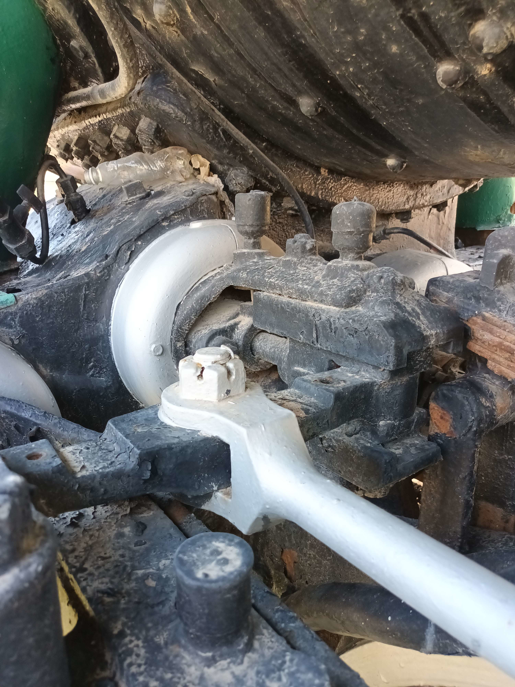 | 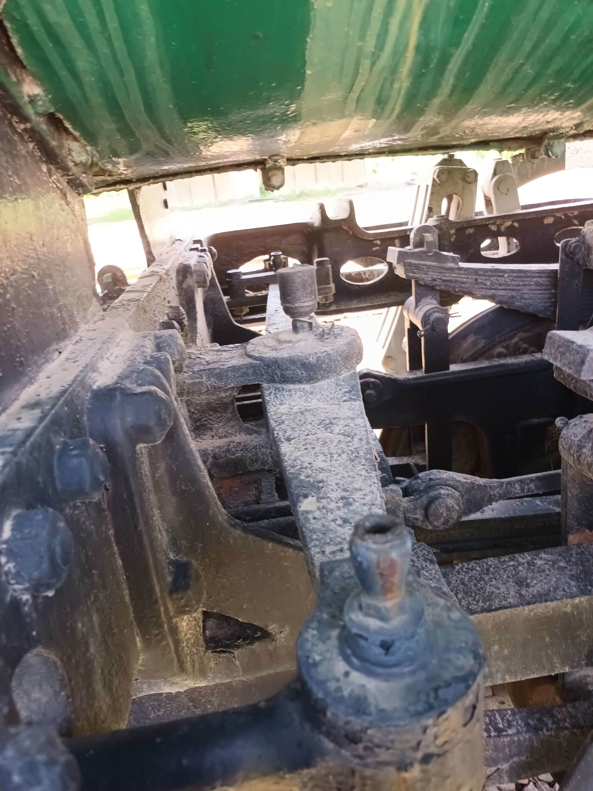 | 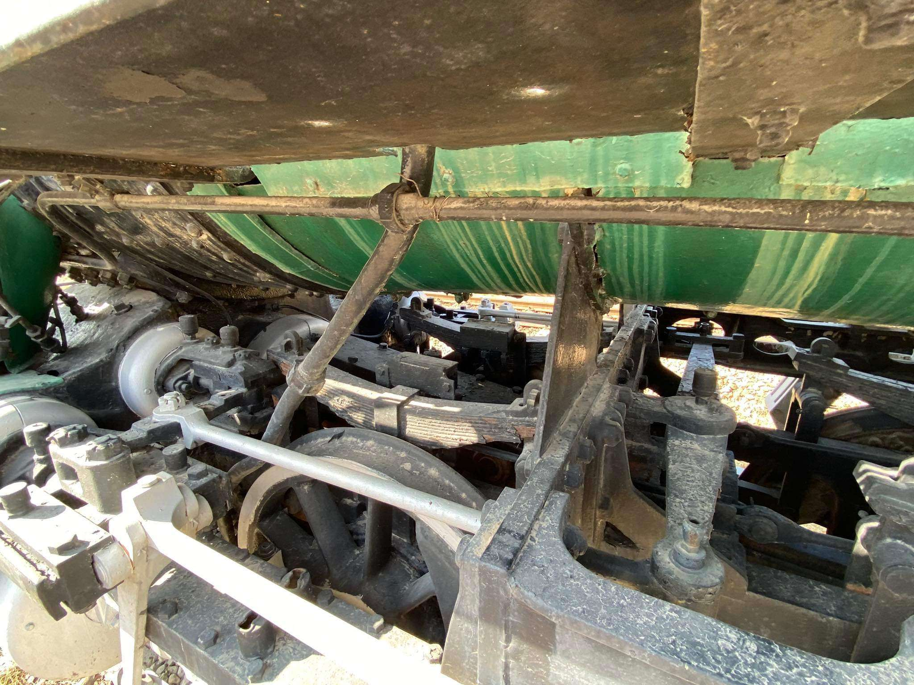 |
Ⓒ 2023 Gappy
Henschel und Sohn developed a form of rocker shaft conjugated gear that was very similar mechanically to the 2 to 1 lever Gresley arrangement, but mounted such that the axis of rotation is transverse instead of vertical. This rocker shaft gear used less parts than gresley's first rocker shaft arrangement. Just like holcroft's first arrangement, the rocking bars are linked to the back of all of the valve spindles. The dependent valve is linked to the outside end of the equal lever instead of the inside end. The outcome is the same whether the positions of the dependent and independent valves are swapped or not. In the GAD below the lever ends are connected fairly close to the valve spindles. However in the photos of real working examples the levers are connected to the valves using long spindle links. Having long spindle links decreases the angularities skewing the resultant motion.
In trials undertaken by the Victorian Railways of Australia, this 2 to 1 rocker shaft was found to be superior in terms of reliability to the rocking lever arrangement.
| 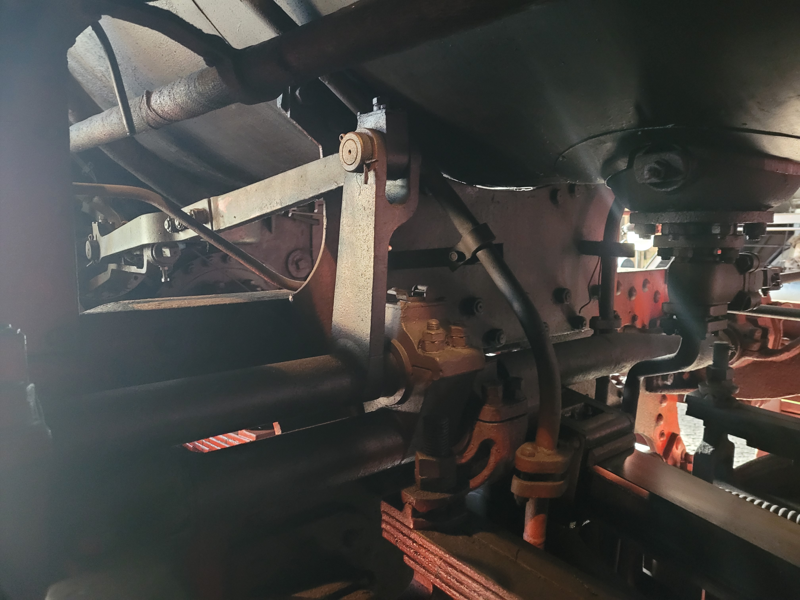 | 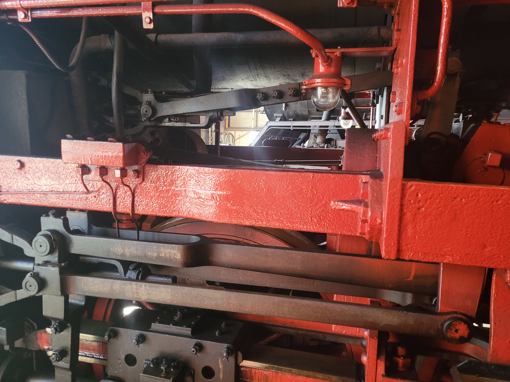 |
|---|
Ⓒ 2022-2025 Saxon Railway Museum

| 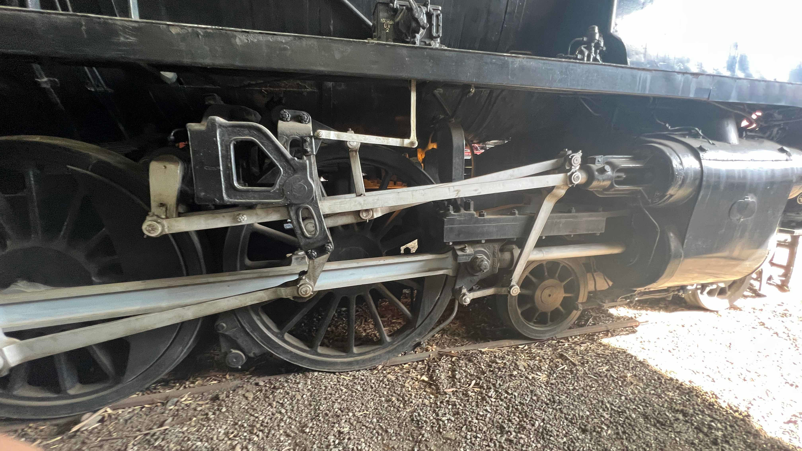 | 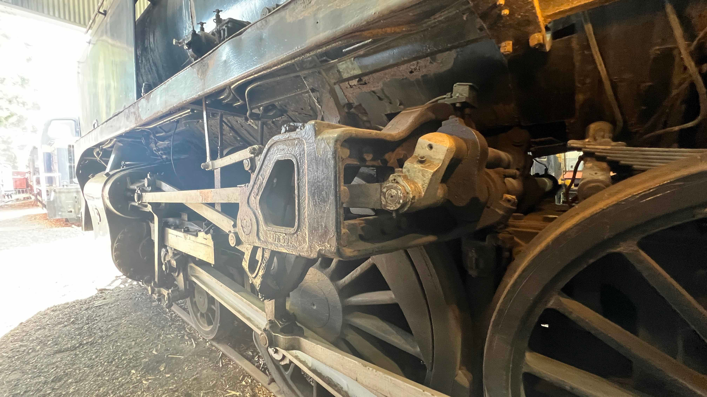 |
|---|
Ⓒ 2023-2024 Alzaar Ahmed
Here is the NSW apprenticeship lecture article on the arrangement: D58 Conjugated Valve Gear.pdf
The New South Wales Railway developed a gear that used racks and pinions to eliminate almost all of the transverse motion (angularities) added by the lever arcs of most other configurations. This was done to make the resultant motion that drives the dependent valve more mathematically pure, even at high speeds, and significantly reduce the reciprocating mass to eliminate the problem of the 2 to 1 lever bending at high speeds. The 2 to 1 lever was replaced with an axle and pinions that divide and invert the motion of the left most valve (4) to generate the input motion needed to move the fulcrum of the equal lever. The equal lever remains unchanged barring the fulcrum now only moving in one axis of motion. Spindle links are still used to connect the valves (10,11) to the equal lever ends.
If we define the radius of the small pinion (9) as r then the radius of the large pinion (2) is 2r, dividing the motion of the left most valve (4 = sinΘ) by 2 so that the result is 1/2sinΘ. The inverting pinion (8) also has a radius of r so it multiplies the input by -1. Thus, the final result is -1/2sinΘ which is the desired input value for the equal lever fulcrum.
As far as I know, this arrangement was only used on the NSW D58 Class. All members of this class were scraped, so it is possible that there are no physical examples of this gear in existence right now.
A .pdf of an article discussing this mechanism can be purchased by Contacting the Australian Railway Historical Society. Ask to Purchase D57 And D58 Classes Design Differences And Power Comparisons by David E. Slee from the January 2000 Bulletin.
General Arrangement Diagram |
D58 With Gear Cover Removed |
|---|---|
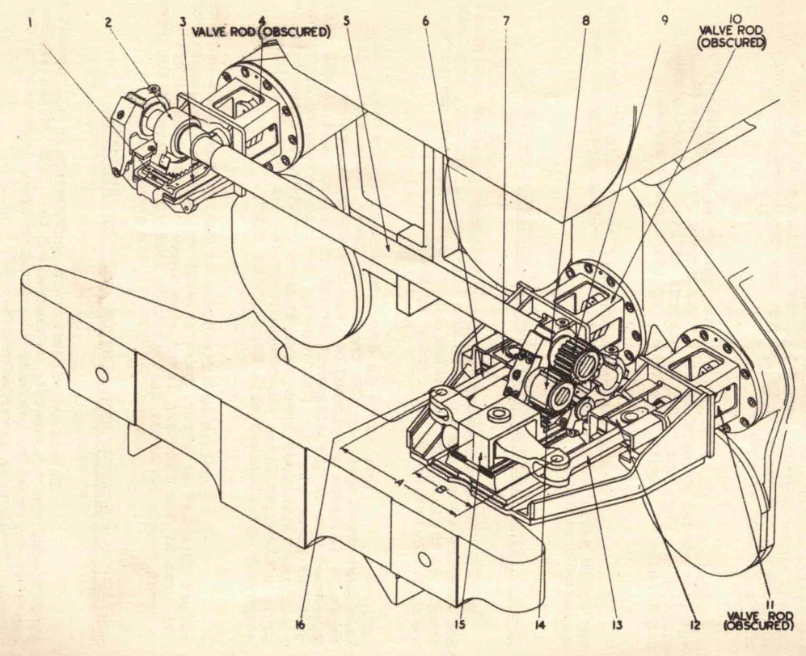 |
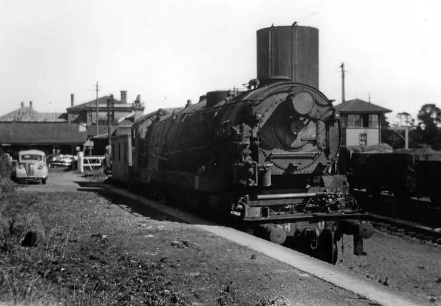 |
This configuration was designed by Holcroft for a 2.5 inch gauge loco by Curly Lawrence named Tugboat Annie. It was created because Curly installed baker valve gear on Tugboat Annie to generate the motion of the outside valves but wanted to avoid building baker sets for the inside valves, as it is poorly suited for this task. He asked his good friend Harold Holcroft to make a suitable conjugated valve gear and as usual he delivered.
It looks intimidating on a first glance, but if you have prerequisite knowledge of how simpler configurations work, it is easier to understand than you would assume. The gear is composed of two functional layers that are almost entirely mathematically separated from eachother. Each layer synthesises the motion of one of the inside cylinder valves using the same two outside cylinder valves as reference, so each layer functions just like a single conjugated set. It is effectively just two conjugated sets superimposed back to back into eachother. The L.H. Rocking Lever is anchored to the left pin of the Big Cradle Lever so it doesn't float. Since the right ends of the R.H. Rocking Lever and the Cranked Lever travel on different arcs the R.H. end is slotted and the pin is connected to a die block to allow necessary play so the components don't sieze on eachother.
Curly stated that the wear on components was low in his model and the stresses on the components were low as well. It's unlikely this would have remained so on a full sized version. There are simply too many components to make it worthwhile and you have to contend with the square cube law as parts are scaled up.
Errected Diagram |
Dissected Diagram |
|---|---|
| 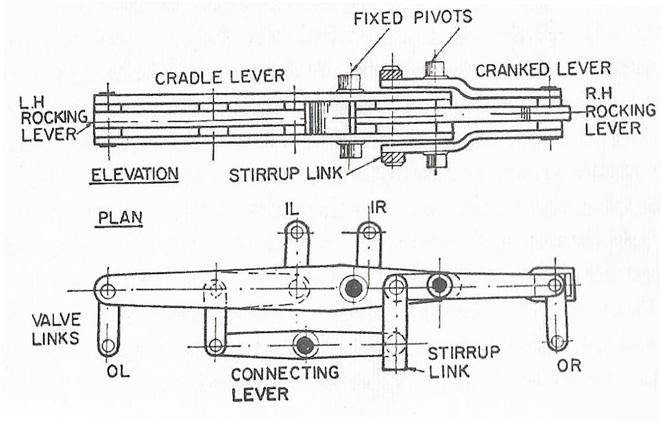 | 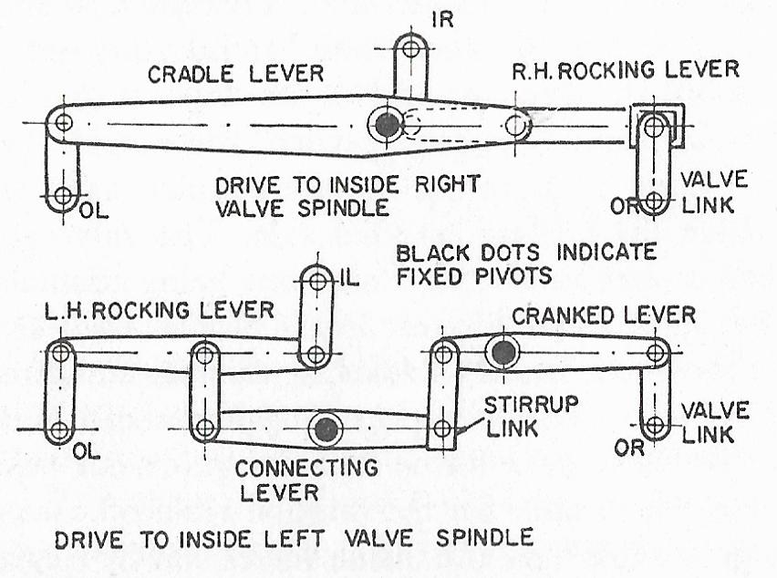 |
Layer 1 |
Layer 2 |
Layer 1 & 2 |
|---|---|---|

|
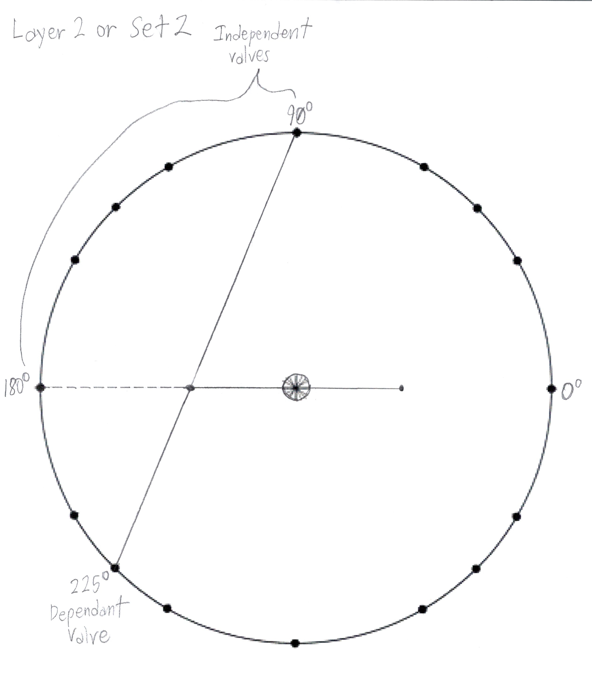 |

|
Component Diagrams |
Old Photo |
|---|---|
| 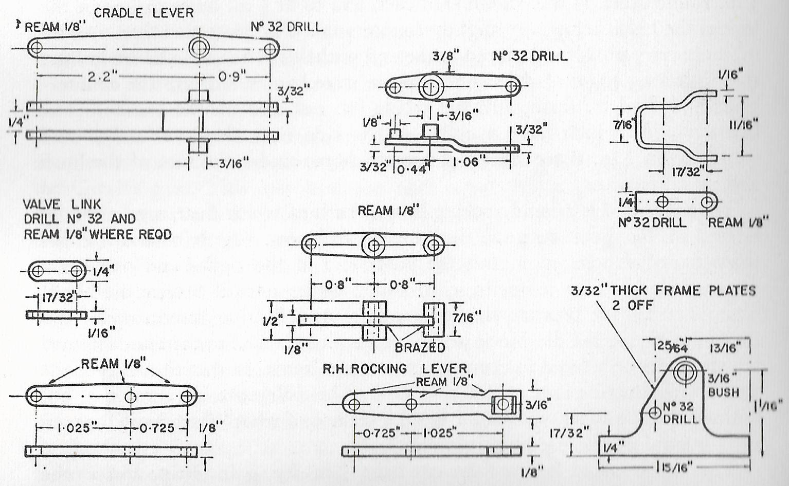 | 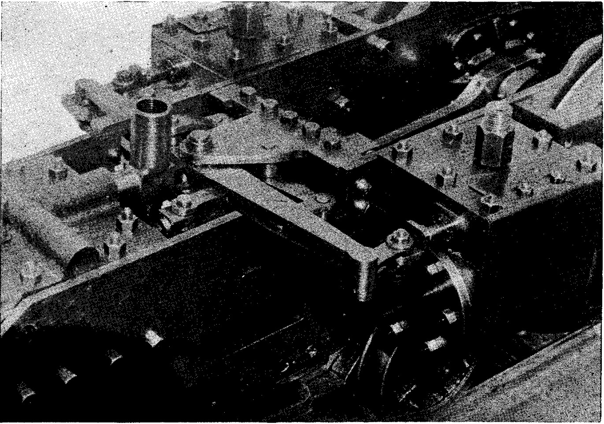 |
I find conjugated gear to be fascinating in all of its forms, however in researching it I have discovered practical problems that arise when it is in operation especially when it isn't precisely built and installed.
Again, in the long run, conjugated gear in all of the forms it has existed thus far is not as good as the best independent inside set.
As the speed of the 2 to 1 lever increases the stress on it increases which causes it to warp and bend. This skews the valve timing such that the admission ports are open for longer than they normally would be, causing the middle cylinder to produce a disproportionate amount of power.
In configurations that derive the input motion from the front of the valve spindles the positions of the levers are effected by the expansion of the valve spindles as they heat up, slightly changing the timing of the dependent valve.
With any valve gear you want the number of moving parts between the reference motion and the valve to be minimized. As the number of moving parts in the motion path increases the number of joints between them also increases. More joins mean more wear all else being equal. More wear means more slackness so motion is lost in the motion path and the valve motion become unideal resulting in lower efficiency. Conjugated gear adds more components to the motion path between the reference and the middle valve.
When conjugated sets were initially tested on the LNER it was found that the stresses on the fulcrum pin were great. The components were not strong enough to withstand this force resulting in frame cracking. In response the valve travel was reduced. The reduction was reversed once stronger components that could withstand the forces were introduced by necessity once valves with longer laps and therefor travel were installed.
Since the spindle links and equal fulcrum arc do not truncate motion, they impart skew on the motion away from an ideal. This skew increases as spindle link size decreases and valve travel increases. Only the Henchel und Sohn and D58 Rack and Pinion arrangements managed to almost completely eliminate skew caused by angularities. The H&S arrangement accomplishes this by having exceptionally long spindle links and the D58 arrangement accomplishes this by having racks and pinions that precisely convert linear to rotary motion and back again.
Since conjugated motion forces all of the valves to be inline it causes an offset middle cylinder and its corresponding valve to be out of line. This means that there has to be twists to the ports from the valve to the cylinder adding a slight undesirable gap. Ideally all of the valves should be inline with their respective cylinders so they can be as close as possible to reduce steam travel losses to a minimum. There are ways of solving this problem. The solutions require more components or components that are more technologically advanced and expensive.
So far the best conjugated gear only has a few benefits over an independent set under a fairly limited set of circumstances. In my opinion the Henschel and Son configuration is the best. For a three cylinder loco running the Gresley or Henschel variants, it could make maintenance slightly easier, but this benefit is lost when increasing the number of cylinders. The number of moving parts per cylinder increases with the Holcroft 4 cylinder configuration. The alternative 4 cylinder simplex only requires two simple separated rocking levers.
Fixing spindle expansion and angularity skew were particular focuses of designers of other configurations. The Henschel variant seems to have been the most successful not only at eliminating spindle expansion skew but also reducing the effect of skew by angularities.
After the Big Four rail companies of Britain were nationalized and consolidated into British Rail an engineer from the former GWR workshops was transferred to the former LNER Doncaster shops. He observed the construction methods used in the shop and was disappointed to learn that the erecting and fitting practices were crude compared to those at Swindon. There was noticeable slackness in the running gear components, resulting in audible clanking and unnecessary discrepancies in the valve timing. If there is slackness in the components it is garenteed to have a negative effect on the valve timing. The fact this was not corrected in Gresley's day is baffling. He quickly set to work introducing precise machining and fitting practices using optical alignment tools brought over from Swindon. It is said that after these practices were applied to the conjugated gear that the clanking of the levers practically disappeared, the rhythm of the exhaust beat became more square, and the power and ease of operation of the corresponding locos noticeably increased. In addition the big end fulcrum bearing is said to have ran much cooler than usual. It didn't solve the problem of the valve timing being skewed by the expansion of the valve spindles and the spindle links being short but still it was a marked improvement.
{kind=link}